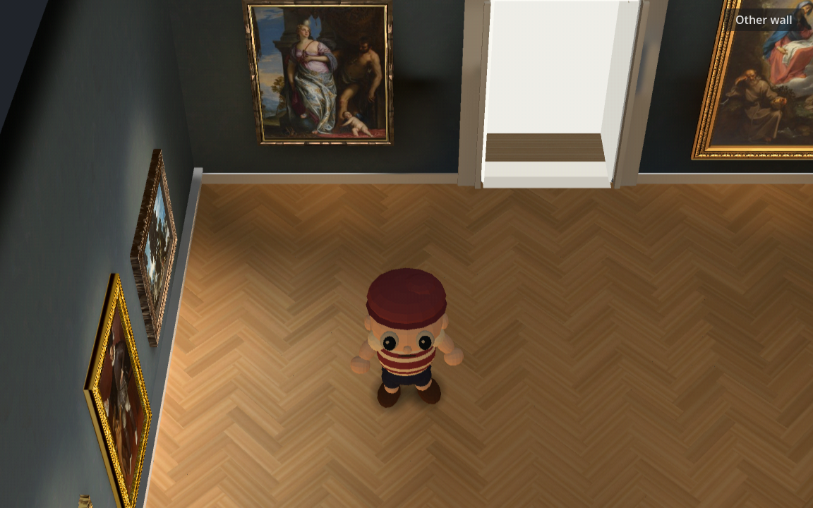
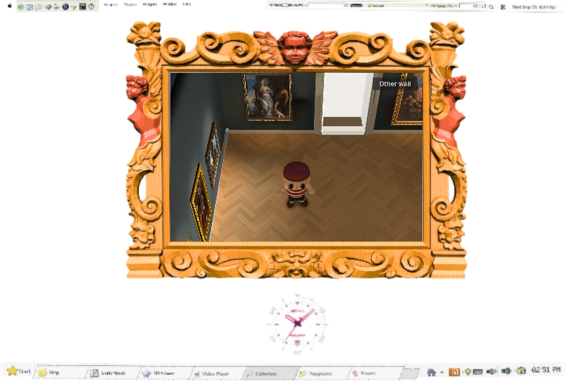

The same oak texture now reads as broader wood inside each plank. The room, art, character and baked light stay the same.


Blind still-image review selected the broader pattern. Moving floor patches remained as stable as the control; navigation and all 23 paintings passed. Evidence and limits.